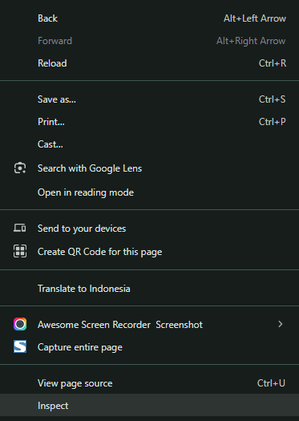
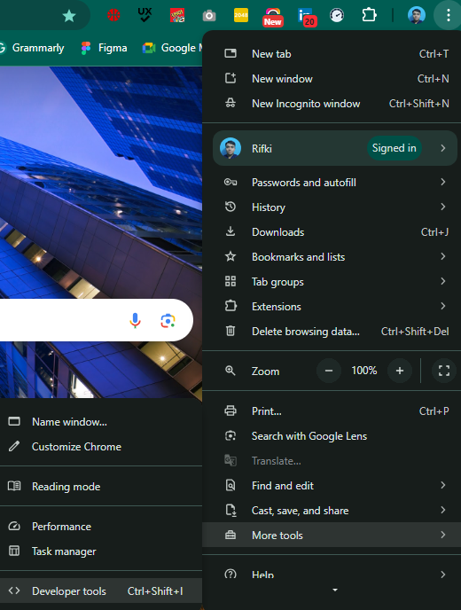

Mencetak Teks/Objek
Untuk mencetak dan menampilkan teks/objek di JavaScript, dapat dilakukan dengan menggunakan fungsi console.log(""). Ketika kode nya dijalankan, hasil output nya dapat dilihat secara langsung di menu Console pada Developer Tools yang ada di browser, atau di terminal pada aplikasi code editor (Visual Studio Code).
Mencetak teks
console.log("Hello World!")
console.log('Selamat datang di kelas JavaScript!')
Mencetak objek
let kota = "Padang";
console.log(kota);
Untuk mengakses Developer Tools pada browser, teman-teman bisa memilih salah satu dari dua cara berikut :
Klik kanan pada display window browser yang dituju, lalu klik Inspect

atauklik tombol Customize and Control (titik tiga) yang berada satu baris dengan address bar di pojok kiri layar,
lalu pilih more Tools, lalu pilih Developer Tools
